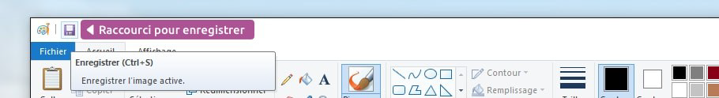
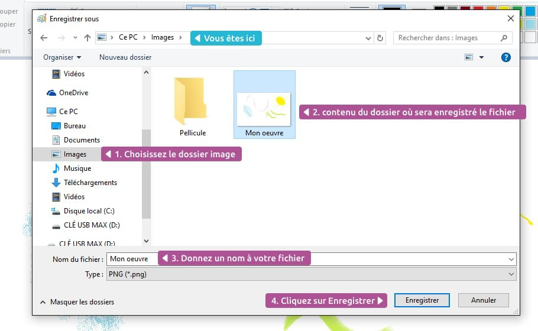
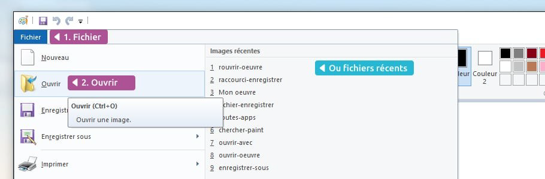
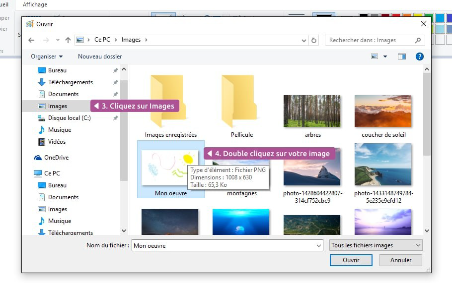
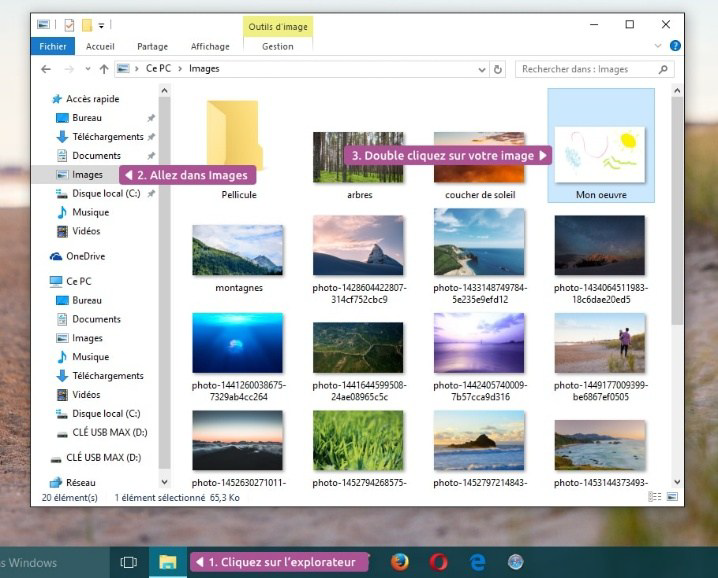
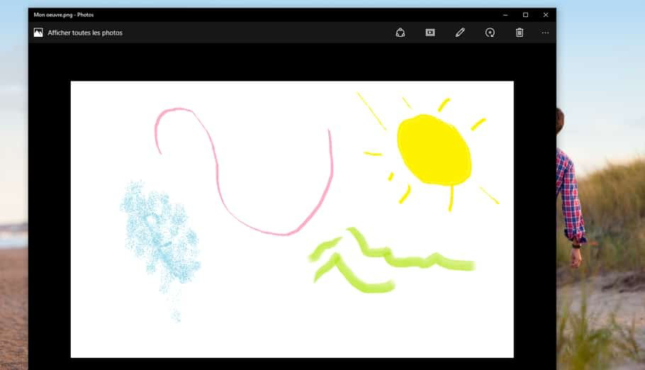
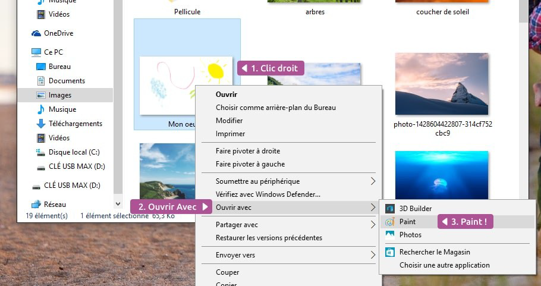

Initiation Environnement Windows
2. Dans la zone rapide
Par raccourci clavier
Enregistrer avec CTRL + S
Vous pouvez également utiliser la combinaison de touches : CTRL + S pour enregistrer votre document. C’est rapide et pratique et ça marche sur tous les logiciels.
Il ne se passera rien à l’écran mais c’est normal ! Votre document sera bien enregistré.
Où enregistrer son document ?
Si c’est la première fois que vous enregistrez votre document, il n’existe pas encore sous forme de fichier. Windows va donc devoir le créer et vous demander à quel endroit.
Par défaut, le logiciel vous propose de l’enregistrer dans votre dossier personnel.
C’est là que nous vous conseillons de ranger tous vos documents. Retournez au cours précédent si vous avez besoin de vous remettre en tête l’arborescence des dossiers Windows.
Une fenêtre va vous permettre de choisir l’emplacement où enregistrer ce document.

La fenêtre Enregistrer Sous
1. La barre latérale de gauche vous permet d’accéder rapidement à vos différents dossiers, choisissez Images
2. La zone centrale affiche le contenu du dossier choisi, vous pouvez naviguer comme dans une fenêtre Windows standard en double cliquant sur les dossiers qui s’y trouvent
3. Indiquez un nom pour votre fichier
4. Cliquez sur Enregistrer en bas de la fenêtre !
Et voilà, votre travail est enregistré en sécurité dans le dossier Images de votre dossier personnel !
À savoir
Si vous fermez votre logiciel avant d’avoir enregistré votre travail, vous risquez de perdre vos données. Le logiciel vous demande toutefois si vous voulez vraiment quitter sans enregistrer, par sécurité.
2.6 Enregistrez votre travail régulièrement !
Il est important d’enregistrer régulièrement votre document au cas où une coupure de courant ou un plantage interviendraient sur votre ordinateur.
La première fois que vous enregistrez votre document, votre logiciel vous demandera où mais seulement la première fois.
Ensuite il mettra simplement à jour le fichier lorsque vous cliquerez sur Enregistrer. Un simple clic sur la petite disquette (ou en pressant CTRL + S) suffira !
Conseil
Nous vous conseillons vivement d’enregistrer votre travail toutes les 10 minutes et dès que vous avez fait des grosses modifications sur votre document.
3. Rouvrir un document
Si vous voulez rouvrir votre document, afin de le consulter ou le continuer, il existe plusieurs méthodes, à vous de choisir celle qui vous convient le mieux !
3.1 Ouvrir un document depuis un logiciel
Imaginons que le lendemain de la création de votre document, vous souhaitez l’ouvrir pour continuer sa rédaction. Ouvrez tout d’abord le logiciel qui a permis de créer votre document, dans notre exemple Paint.
1. Cliquez sur Fichier
2. Puis Ouvrir

Fichier > Ouvrir
3. Dans la fenêtre qui apparaît naviguez jusqu’au dossier ou vous aviez enregistré votre document. Dans notre cas le dossier Images est listé dans la colonne latérale
4. Le contenu du dossier apparaît et on peut voir notre fichier. Double cliquez dessus

Naviguez dans les dossiers pour retrouver votre fichier
L’image s’ouvre et vous pouvez continuer son édition !
Ouvrir un document depuis son emplacement
Vous pouvez également ouvrir votre document sans passer par le logiciel mais directement par l’explorateur Windows.
1. Allez dans votre dossier personnel
2. Naviguez jusqu’au dossier où vous avez enregistré votre document : le dossier Images
3. Double-cliquez sur l’icône du fichier
4. Le document s’ouvre

Ouvrir un fichier via l’explorateur de fichiers
Oups ! Qui c’est celui là ?

Ce n’est pas Paint !
C’est bien notre dessin, mais ce n’est pas le bon logiciel ! C’est normal : Windows est configuré pour ouvrir tout fichier d’image avec le logiciel d’affichage des photos (Visionneuse de photos dans les anciens Windows) afin de les consulter rapidement.
Nous, ce que l’on souhaite, c’est ouvrir le fichier avec Paint pour continuer notre création. Si ce cas vous arrive, il existe une méthode simple pour indiquer avec quel logiciel ouvrir votre fichier :
Faites un clic droit sur le fichier au lieu du double clic et choisissez Ouvrir avec puis Paint. Le tour est joué !

Ouvrir un fichier avec un autre logiciel que celui proposé par défaut